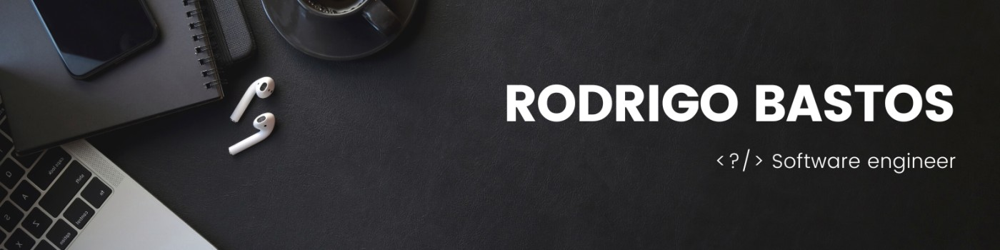
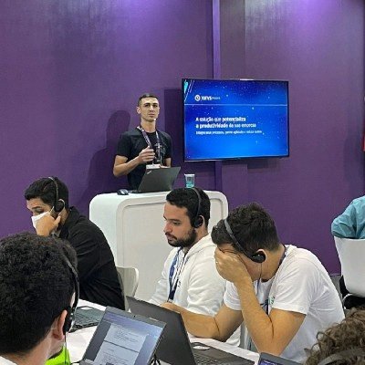

Analista de Sistemas Sênior
Softplan · Florianópolis, SC
mar. 2024 - dez. 2025
Atuação sênior no desenvolvimento e evolução de produtos, com foco em qualidade técnica e entregas consistentes.
Seu portal de notícias do campus


Estudante de Redes de Computadores
Blumenau, Santa Catarina
Há mais de 7 anos transformo ideias em experiências digitais. Meu forte é o Front-end, onde gosto de arquitetar interfaces e componentes reutilizáveis, mas a curiosidade me levou a também explorar Back-end e mobile híbrido — o que me dá uma visão de ponta a ponta dos projetos.
Trabalho com Angular, React e Vue no dia a dia, e ao longo do caminho descobri que gosto tanto de escrever código quanto de ensinar: liderar e mentorar colegas, desmistificar o que parece complexo e ajudar o time a crescer é o que mais me motiva.
Fora do código, curto academia, sou maratonista de séries (Suits no topo da lista) e sempre topo um bom papo sobre tecnologia ou futebol. Acredito que aprendizado e colaboração não param quando o expediente acaba.
Softplan · Florianópolis, SC
mar. 2024 - dez. 2025
Atuação sênior no desenvolvimento e evolução de produtos, com foco em qualidade técnica e entregas consistentes.
NTT DATA Europe & Latam · São Paulo, SP
set. 2022 - mar. 2024
Consultor em grandes clientes (seguradora e montadora global), unindo análise de impacto e visão estratégica de produto à liderança técnica do time de Front-end. Concebi e liderei Design Systems completos com Angular e TypeScript, otimizando o tempo de produção e a consistência visual. Fui reconhecido como Arquiteto Front-end dos produtos do cliente.
TOTVS · Joinville, SC
jul. 2020 - set. 2022
Liderei o desenvolvimento de componentes de Design System com Web Components, permitindo reuso entre Angular, React e Vue. Também coordenei o onboarding de novos desenvolvedores, cuidando de ambiente, arquitetura e boas práticas.
SoftExpert · Joinville, SC
out. 2019 - mar. 2020
Construção de componentes de Design System em ReactJS, aplicando Atomic Design e testes unitários com Jest para garantir qualidade e escalabilidade das interfaces.
Seons Sistema de Gestão · Itajaí, SC
set. 2018 - out. 2019
Liderança técnica e atuação full stack em um novo produto: interfaces em Angular 6+ e APIs REST com Node.js (Hapi.js) e MongoDB, com testes em Jasmine e Jest.
IT Power · Barueri, SP
fev. 2017 - ago. 2017
Primeira experiência profissional como desenvolvedor full stack, atendendo demandas de clientes com JavaScript e ASP e aprendendo, na prática, o ciclo de vida do software.